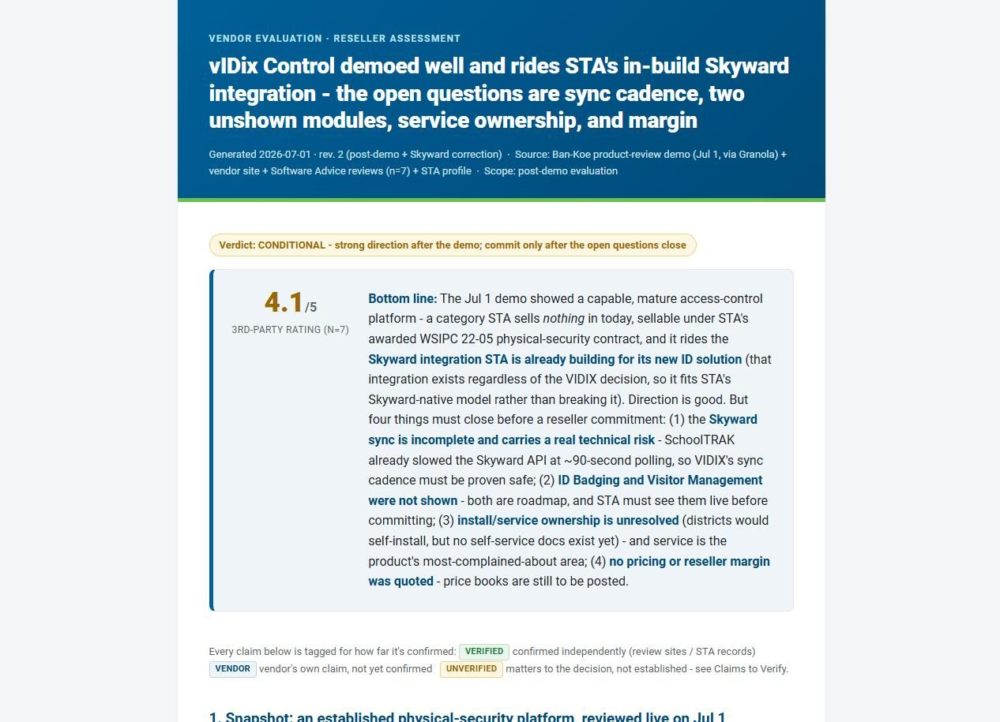

Takes a vendor demo, pitch, or product and produces a skimmable, neutral STA-branded evaluation. Two modes:
It renders entirely through the STA HTML Report skill - never hand-rolled HTML.
After a vendor demo or pitch, or when weighing whether to buy, resell, pilot, or pass on a product - and for head-to-head comparisons. Not for sales one-pagers sold to customers or help-center how-tos.
"evaluate this vendor"
"write up the [X] demo"
"should we resell [X]?"
"compare these vendors"

What this skill needs in order to run. Added 2026-08-20.
Skills - None.
Connectors / MCP servers - None. Recordings and transcripts are inputs you supply, not a connector this skill calls.
Folder access - Read access to the materials you provide - demo notes, a transcript, the vendor's email or deck - and write access to the evaluation output.
KB modules / context files - None.
Repos - None.
If something is missing - Missing inputs are LOUD - the skill does not invent facts and tags vendor assertions as vendor-claimed. The SILENT failure is misattribution: in a recording, a quote must be traced to a speaker using the transcript's own labels, because the capture tool may label only the person who recorded it, which makes a vendor's claim read as an STA statement.